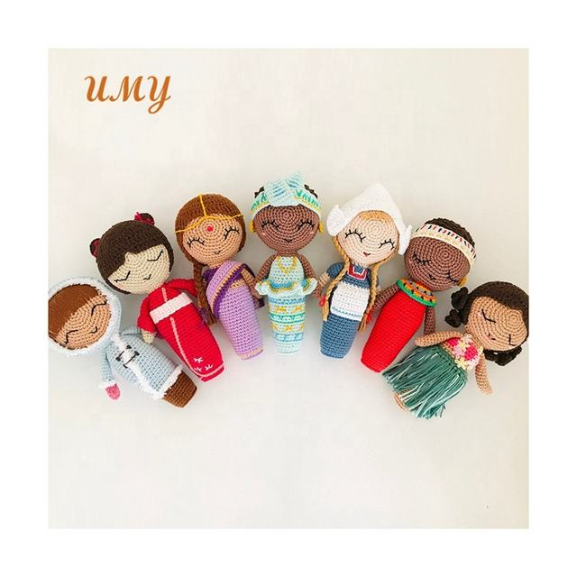

Custom Amigurumi Manufacturer
Turn original sketches, mascots and character briefs into hand-crocheted samples and scalable retail collections with a dedicated development process.
Custom Amigurumi Development from Brief to Bulk Production
Character Development
We translate front, side and detail references into crochet proportions, yarn colors and stitch specifications.
Sample Approval
Review the expression, dimensions, accessories, label placement and packaging before production begins.
Consistent QC
The approved sample becomes the production reference for stitch density, filling, finishing and key character details.
Original Character and Private-Label Amigurumi Programs
This page is for toy brands, gift retailers, museums and organizations developing original animals, mascots, educational characters, nursery decor or seasonal amigurumi. It focuses on made-to-brief character development rather than the ready-design search intent served by our wholesale crochet dolls collection. Buyers are responsible for confirming rights to licensed designs.
Prepare a Character Brief
Share front, side and detail references, target dimensions, color direction and the features that make the character recognizable. Mark facial placement, clothing, accessories and any parts that should be attached or removable. Include intended age group, retail use, destination market, expected quantity and packaging direction so the construction can be reviewed for the actual program.
Review the Complete Sample
Evaluate proportions, expression, dimensions, color placement, firmness and key character details against the brief. Review labels, cards and packaging with the sample when they are part of the program. Consolidating comments into one annotated revision document creates a clearer approval record than separate messages. The approved sample and written specification then become the production reference.
Confirm Production and Quality Requirements
Before production, confirm quantity, approved color references, component placement, final artwork and pack-out instructions. Quality review should focus on the details that define the character: silhouette, facial alignment, secure components, finishing and correct branding. Timing, materials and destination-market requirements are confirmed according to the approved design and order details.
Custom Amigurumi Manufacturer FAQ
What should buyers send first?
Share character references, target size, yarn colors, accessories, packaging needs, destination market and expected quantity.
Can PEIMI develop from a sketch?
Yes. Original sketches and mascot briefs can be translated into a crochet sample for review before bulk production.
What is the MOQ?
The standard MOQ is 200 pieces per design, with final details confirmed during quotation and sampling.
Can packaging and labels be customized?
Yes. Buyers can brief hangtags, sewn labels, cards and retail packaging as part of the approved production specification.